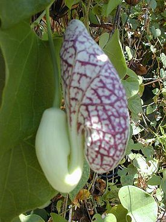
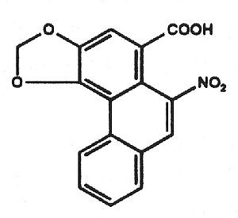

Полезная травка
В то время, как искусственный напиток Кола в некоторых местах признан наконец то канцерогеном, все натуральные травки, традиционно использующиеся в народных медицинах полезны и незаменимы.
С натуральными штуками есть одна особенность, вроде и разумная, но весьма ущербная.
В то время, как все "ненатуральные" вещи, которые придумали химики, фармакологи и прочие колдуны считаются вредными, и не могут быть разрешены до того, как проведут исследования их безопасности, то все "натуральные" штуки априори считаются безопасными и даже полезными до тех пор, пока не наберется достаточных доказательств их вредности. Типа если люди это тыщу лет ели и до сих пор живы, значит все в порядке. Этот принцип лежит в основе многих законов. Никто не изучает обычную кукурузу, но переизучали генно-модифицированную, никто не ограничивает потребление сахара, но мучают аспартам, не пропускают на рынок лекарство без кучи испытаний, но БАДами лечатся на каждом углу.
Считать, что растения производят в себе какие-то полезные для нас вещества мягко говоря неверно, строго говоря является верхом эгоцентризма. Все, что производит растение (особенно неокультуренное), оно синтезирует исключительно для себя. Многое из этого оно производит совсем не для того, что бы мы его съели, а для того, что бы его не ели.
Это конечно не повод не изучать все химическое многобразие живой природы. Но это и не повод бросаться в ее объятия. Производимые растением вещества (точно так же как любое другое) может обладать полезными или вредными свойствами, или и то и другое одновременно. Но утверждать о полезности растения только на основании тысячелетней традиции его использования не просто ошибочно, иногда летально.
Есть такое растение: Кирказон

Разные полезные добавки на основе цветов, листьев или корешков этого природного чуда традиционно употребляются со времен древних Египта, Греции и Рима. В китайской медицине родственные этому растению виды обычно используют против дизентерии, кожных заболеваний, гипертонии, туберкулеза, геморроя и даже змеиных укусов, а в индийской - для провоцирования абортов. Некоторые сторонники натурального образа жизни и отказа от адских средств современных корпораций до сих пор частенько прибегают к использованию этого чуда природы. Только зря.
Это растение и его родственники содержат в себе вот такую красивую молекулу

Молекула в свою очередь обладает биологически активными свойствами. Вызывает почечную недостаточность вплоть до отказа почек, и рак мочевыводящей системы. Не просто коррелирует, не теоретически вызывает, а реально вызывает рак, случаи эти зафиксированы во многих странах мира, речь идет не о единицах и даже не о десятках пострадавших. И это не какая то мифическая опасность от колы, это реальная опасность от натуральных травок и БАДов.
Здоровых людей не бывает, бывают недообследованные. Лишь в 2008 году было замечен такой эффект. До этого не было ни одной публикации, ни одного исследования по токсикологии растения.
Несмотря на многотысячелетнюю практику употребления